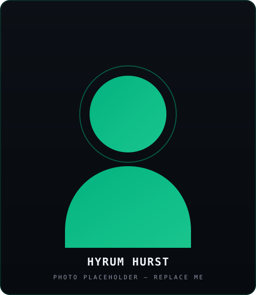

About
AI implementation and workforce enablement, led by Hyrum Hurst.
QuarterSmart helps organizations implement AI without losing the human systems that make the work run — from first assessment to org-wide rollout.

Placeholder — swap with a real photo
Who runs QuarterSmart
Hyrum Hurst is the founder of QuarterSmart, an AI implementation and workforce enablement company focused on helping organizations move from experimentation to full-scale rollout. His work sits at the intersection of AI adoption, workflow automation, hands-on team enablement, and developer-forward deployment.
Publicly, he is a verified n8n creator with 25 workflow templates and QuarterSmart-branded automations spanning lead routing, compliance, operations, and property workflows — proof of building AI-enabled operational systems, not just talking about them.
What QuarterSmart actually is
QuarterSmart was not built to sell an empty platform or a one-off workshop. It was built to help organizations assess where AI fits, train the people responsible for using it, deploy working systems, and measure what actually changes. When a workflow needs custom build work, QuarterSmart ships it. The point is operational adoption — repeatable, team-wide usage that changes how work gets done.
How the work runs
From AI curiosity to operational adoption.
Start with one assessment. Grow into a rollout system.
Book an AI Rollout Assessment